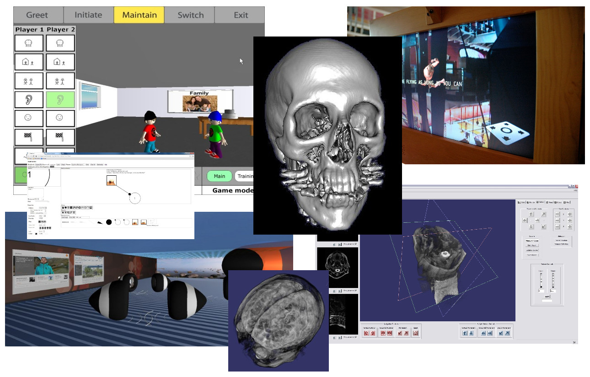

<!DOCTYPE html>
<html>
<head lang="en">
    <meta charset="UTF-8">
    <title>Vis Framework</title>

    <script type="text/javascript" src="js/jquery-1.9.0.js"></script>
    <script type="text/javascript" src="js/three68.js"></script>
    <script type="text/javascript" src="js/TrackballControls.js"></script>
    <script type="text/javascript" src="js/stats.js"></script>
    <script type="text/javascript" src="js/SceneLoader.js"></script>
    <script type="text/javascript" src="js/OBJLoader.js"></script>
    <script type="text/javascript" src="js/BinaryLoader.js"></script>
    <script type="text/javascript" src="js/baseApp.js?v=0.2"></script>
    <script type="text/javascript" src="js/spriteManager.js?v=0.1"></script>
    <script type="text/javascript" src="js/website.js?v=0.1"></script>

    <link rel="stylesheet" href="http://yui.yahooapis.com/pure/0.5.0/pure-min.css">
    <link href="css/websiteStyles.css?v=0.2" rel="stylesheet" type="text/css">
</head>
<body>
<div id="WebGL-output">

</div>
</body>
</html>

<div id="main">
    <div class="header" id="myHeader">
        <h1>Tony Glover</h1>
        <h2>Senior Research Fellow, Software Developer and Consultant</h2>
    </div>

    <div class="content">
        <h2 class="content-subhead">Welcome</h2>
        <p>
            Dr Tony Glover is a Senior Research Fellow in the Mixed Reality Lab, within the School of Computer Science.
            After joining the group in 1997 he was awarded a PhD within the field of immersive collaborative virtual environments in 2001.
            Previously he was employed in the telecommunications industry for a number of years and worked for such companies as Plessey Telecommunications, GPT and Siemens.
            He has also performed consultancy work and set up his own consultancy company in 2000.
        </p>

        <div class="content-central">
            
        </div>

    </div>
</div>

<div class="footer">
    <p>
        All opinions on this site are mine, not the University of Nottingham's.
    </p>
</div>